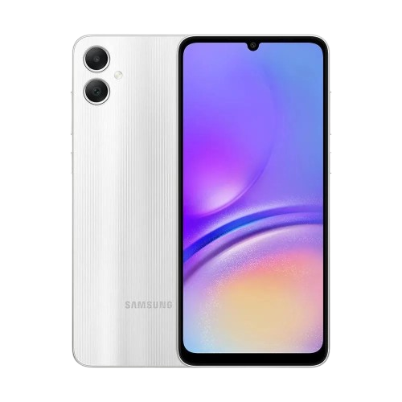

Considerado um dos primeiros instrumentos de cálculo, o ábaco ajudou as pessoas a fazerem contas e registrar informações.
Imprensa (1440)
Johannes Gutenberg inventou a prensa móvel, que permitiu a produção em massa de livros. Isso facilitou a disseminação de ideias e informações.
Telégrafo (1837)
Samuel Morse desenvolveu o telégrafo, que permitiu a comunicação rápida a longas distâncias através de sinais elétricos. O famoso “código Morse" foi criado para transmitir mensagens.
Telefone (1876)
Alexander Graham Bell inventou o telefone, que revolucionou a comunicação ao permitir conversas em tempo real entre pessoas distantes.
Rádio (1895)
A invenção do rádio permitiu a transmissão de som e música através de ondas de rádio, conectando pessoas como nunca antes.
Televisão (1927)
A TV trouxe imagens em movimento para as casas, tornando-se uma das principais formas de entretenimento e informação.
Computador ENIAC (1945)
O ENIAC foi um dos primeiros computadores eletrônicos e ocupava uma sala inteira! Ele ajudou a calcular dados complexos, sendo uma grande inovação na computação.
Internet (década de 1990)
A popularização da internet transformou a comunicação. Agora, as pessoas podiam enviar e-mails, navegar em sites e se conectar globalmente.
Redes Sociais (década de 2000)
Plataformas como Facebook e Twitter mudaram a forma como interagimos, permitindo que pessoas compartilhem ideias, fotos e vídeos instantaneamente.

Smartphones (década de 2010)
Com a chegada dos smartphones, a comunicação se tornou ainda mais acessível. As pessoas podem enviar mensagens, fazer videochamadas e acessar informações a qualquer hora e lugar.
Inteligência Artificial (atualidade)
Hoje, a inteligência artificial está transformando a comunicação, com assistentes virtuais e chatbots ajudando na interação e na busca por informações.